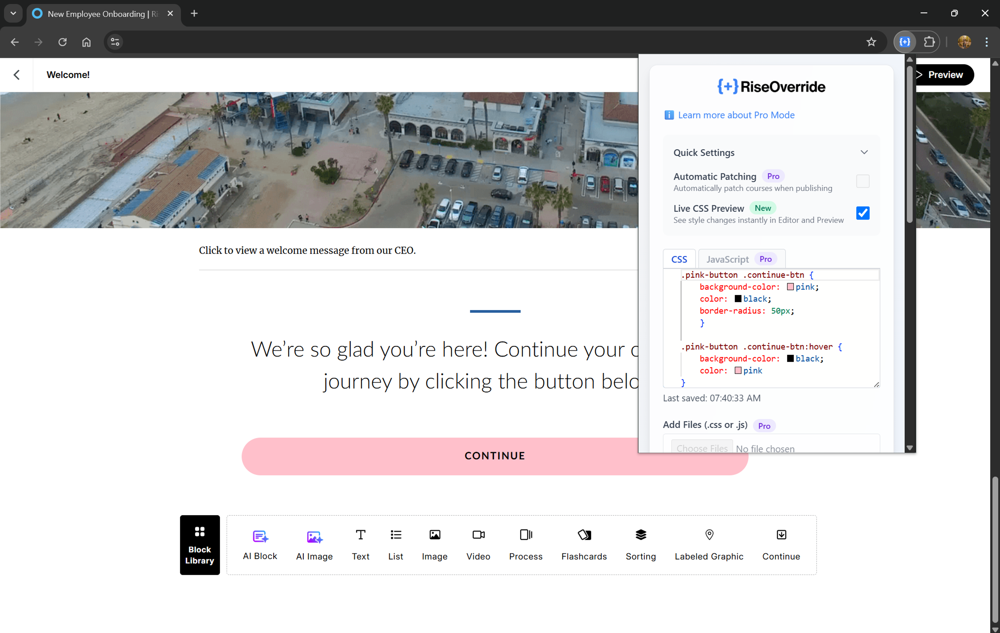

RiseOverride v1.5.0 Release: Live CSS Preview & Copy Block ID Selector
Published on by Team @ Override Labs
We’re excited to announce RiseOverride v1.5.0—our biggest update yet for creators who want total control over their Articulate Rise courses! This release brings two major features designed to make your workflow faster, smoother, and more visual than ever before.
Live CSS Preview: See Your Changes Instantly
With Live CSS Preview, any changes you make in the CSS window of the RiseOverride Chrome Extension are now reflected in real time inside Articulate Rise’s editor and course preview. This feature is completely free for all users. No more guessing, saving, or reloading—just type your CSS and see the results instantly, right where you’re working.
- Instant feedback: Tweak colors, spacing, fonts, and more, and watch your course update as you type.
- Works in both the Rise editor and course preview: Perfect your design before you export.
- Save time and reduce trial-and-error: Focus on creativity, not on switching tabs or reloading pages.
Copy Block ID Selector: Target Elements Even Faster
We’ve added a new button to the RiseOverride toolbar: Copy Block ID Selector. With one click, you can copy a ready-to-use CSS selector for any block in your Rise course. This feature is also completely free for all users. This makes it even easier to target specific blocks or elements for custom styling—no more digging through HTML or using developer tools.
Note: The copied selector targets the block container itself. For best results, you’ll want to add a descendant selector (e.g., [data-block-id="..."] .your-element) to scope your CSS changes to specific elements within the block, rather than the entire block.
- One-click selector copy: Instantly get the exact selector you need for your CSS.
- Perfect for advanced customizations: Combine with Live CSS Preview for rapid design iteration.
Try It Yourself: Make a Floating Pink Continue Button
Want to see how easy it is to style a specific block? Here’s a quick experiment you can try in any Rise course:
- Use the RiseOverride toolbar’s Add Class option to add
pink-buttonas a custom class to your chosen block. - Paste the following CSS into the RiseOverride CSS window:
.pink-button .continue-btn {
background-color: pink;
color: black;
border-radius: 50px;
animation: floatY 2.5s ease-in-out infinite;
}
.pink-button .continue-btn:hover {
background-color: black;
color: pink;
}
@keyframes floatY {
0% { transform: translateY(0); }
50% { transform: translateY(-12px); }
100% { transform: translateY(0); }
}
This will give your Continue button a playful pink look and a gentle floating animation. You can use any class name you like—just be sure to match it in both the toolbar and your CSS. The animation is subtle and loops forever, drawing attention to your button without being distracting.
How to Get Started
- Update or install the RiseOverride Chrome Extension from the Chrome Web Store.
- Open your Articulate Rise course and launch the extension.
- Start customizing! Use the CSS window for live previews and the new toolbar button to copy selectors as needed.
We can’t wait to see what you create with these new tools. As always, RiseOverride is free for all users. If you have feedback or feature requests, let us know!
Install RiseOverride for free →
Note: To make your custom CSS work in your published course, you’ll need to patch your final SCORM file using the RiseOverride extension. This process automatically injects your CSS into the export—no manual editing required. Currently, RiseOverride supports SCORM 1.2 and 2004 outputs. Full support for all Rise output formats is coming in our next update!